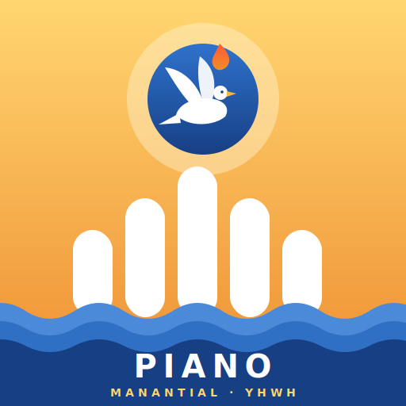

Do mayor
Grados: 1 – 3 – 5

Piano y Melodías · YHWH
Un espacio para tocar, aprender y crear música de adoración.
Busca por título y cambia entre Adoración y Júbilo al entrar a una sección.
Los sonidos se descargan automáticamente cuando hay conexión.
En Safari, toca Compartir y elige “Añadir a pantalla de inicio”. Luego podrás abrirla desde su icono en pantalla completa.